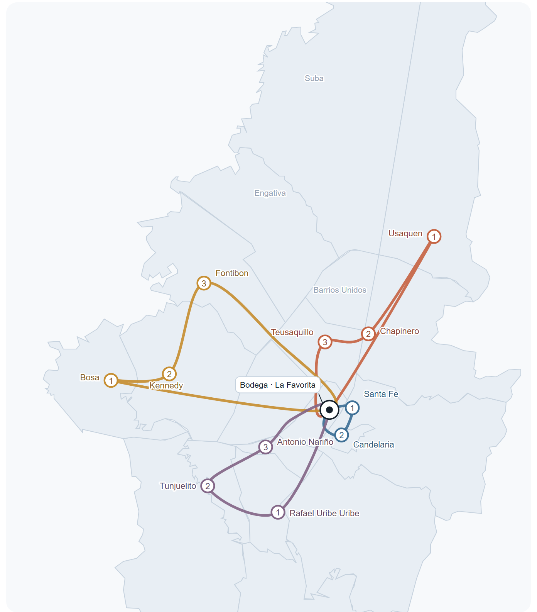

03 · Rutas
Cuatro rutas, una por día, dibujadas sobre los límites reales de las 20 localidades. Todas arrancan en el barrio La Favorita, entran por el punto más lejano y vuelven cargando.
← Volver al inicio · Descargar PDF · Póster completo · rutas.csv · Plan diario y acopio →

Los límites son los de la cartografía distrital de Bogotá. El punto central es la bodega en el barrio La Favorita. Las líneas marcan el corredor entre localidades, no el trazado calle por calle.
Santa Fe · Candelaria
5:00 – 9:00 · cartón, plegadizo, PET
Usaquén · Chapinero · Teusaquillo
9:30 – 13:00 · vidrio, PET, papel
Bosa · Kennedy · Fontibón
13:30 – 16:30 · metales
Rafael Uribe · Tunjuelito · A. Nariño
16:00 – 18:30 · PET, latas, cartón
| Ruta | Orden de visita (1 → 3) | Qué se recoge | Franja | Carga (máx. 150 kg por viaje) |
|---|---|---|---|---|
| 1 · Centro | Santa Fe → Candelaria | Cartón, plegadizo, PET, aluminio de comercio | 5:00 – 9:00 | 2 viajes · 95 + 75 kg |
| 2 · Norte | Usaquén → Chapinero → Teusaquillo | Vidrio de restaurantes, PET, papel de oficina | 9:30 – 13:00 | 2 viajes · 105 + 95 kg |
| 3 · Occidente | Bosa → Kennedy → Fontibón | Chatarra, cobre, latón, aluminio de taller | 13:30 – 16:30 | 1 viaje · 130 – 150 kg |
| 4 · Sur | Rafael Uribe Uribe → Tunjuelito → Antonio Nariño | PET, latas, cartón residencial | 16:00 – 18:30 | 2 viajes · 100 + 85 kg |
La franja es la ventana de la ruta. Con el reparto en viajes de máximo 150 kg, los días largos cierran más tarde: martes 14:25 y jueves 19:10 (ver el plan diario).
| Día | Ruta | Lógica |
|---|---|---|
| Lunes | Ruta 1 · Centro | El cartón del fin de semana se saca temprano |
| Martes | Ruta 2 · Norte | Restaurantes y oficinas ya vaciaron |
| Miércoles | Ruta 3 · Occidente | Talleres abiertos, día de metales y de dos vueltas |
| Jueves | Ruta 4 · Sur | Residencial, cuando la gente ya acumuló la semana |
| Viernes | Ruta 1 · repaso | El comercio vuelve a generar cartón y plegadizo |
| Sábado | Mixta | Solo clientes fijos que ya dijeron sí |
| Domingo | — | Descanso y mantenimiento del triciclo |